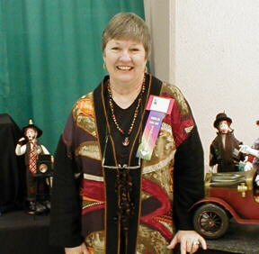
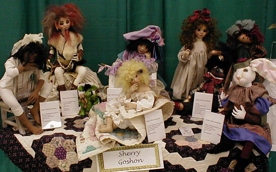
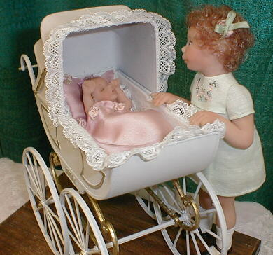
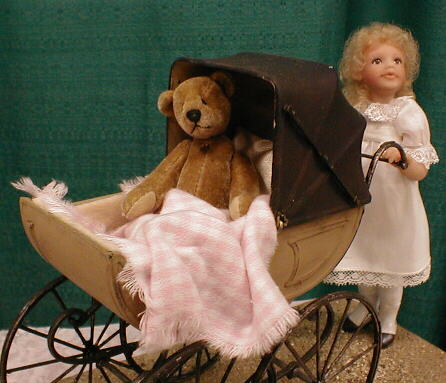
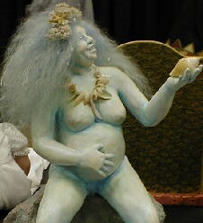

Santa Fe 2000 Doll Show - Page 1


Joyce Patterson of Texas smiles for the crowd from her booth.

Sherry Goshon's wonderful collection.

A darling miniature scene by Mary Ann Oldenburg.

Another beautiful miniature set by Mary Ann.

Who is the artist? This was, I believe, the first place winner in the competition category "Fixed Figures". Yes, she really is blue!